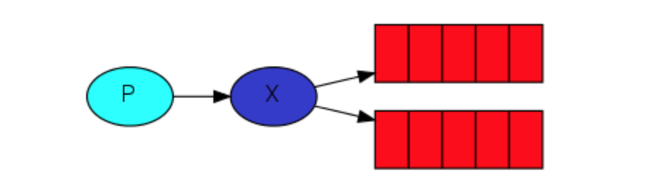

内容摘要
In the previous tutorial we created a work queue. The assumption behind a work queue is that each task is delivered to exactly one worker. In this part we'll do something completely different -- we'll deliver a message to multiple consumers. This pattern is known as "publish/subscribe".
To illustrate the pattern, we're going to build a simple logging system. It will consist of two programs -- the first will emit log messages and the second will receive and print them.
In our logging system every running copy of the receiver program will get the messages. That way we'll be able to run one receiver and direct the logs to disk; and at the same time we'll be able to run another receiver and see the logs on the screen.
Essentially, published log messages are going to be broadcast to all the receivers.
在前面的教程中，我们创建了一个worker队列。worker队列背后的假设是，每个任务只交付给一个消费者。在这一部分中，我们将做一些完全不同的事情——我们将向多个消费者传递消息。这种模式称为“发布/订阅”。
为了说明该模式，我们将构建一个简单的日志系统。它将由两个程序组成——第一个程序将提交日志消息，第二个程序将接收并打印这些消息。
在我们的日志系统中，每个运行着的接收程序的副本的消费者都将获得消息。这样，我们就可以运行一个接收者，并将日志定向到磁盘;同时，我们将能够运行另一个接收者并在屏幕上看到日志。
从本质上讲，发布日志消息将广播给所有的接收者。
Exchanges
In previous parts of the tutorial we sent and received messages to and from a queue. Now it's time to introduce the full messaging model in Rabbit.
Let's quickly go over what we covered in the previous tutorials:
- A producer is a user application that sends messages.
- A queue is a buffer that stores messages.
- A consumer is a user application that receives messages.
The core idea in the messaging model in RabbitMQ is that the producer never sends any messages directly to a queue. Actually, quite often the producer doesn't even know if a message will be delivered to any queue at all.
Instead, the producer can only send messages to an exchange. An exchange is a very simple thing. On one side it receives messages from producers and the other side it pushes them to queues. The exchange must know exactly what to do with a message it receives. Should it be appended to a particular queue? Should it be appended to many queues? Or should it get discarded. The rules for that are defined by the
exchange type.
快速回顾一下之前的教程
- 生产者是一个用户应用，用来发送消息
- 队列是一个用来存储消息的缓存
- 消费者是一个用户应用，用来接收消息
RabbitMQ消息传递模型的核心思想是，生产者从不直接向队列发送任何消息。实际上，通常情况下，生产者甚至根本不知道消息是否会被传递到任何队列。
相反，生产者只能向exchange发送消息。exchange是一件非常简单的东西。一边接收来自生产者的消息，另一边将消息推送到队列。exchange必须确切地知道如何处理它接收到的消息。它应该被附加到一个特定的队列吗?它应该被添加到许多队列中吗?或者它应该被丢弃。这些规则由exchange_type定义。

There are a few exchange types available: direct, topic, headers and fanout. We'll focus on the last one -- the fanout. Let's create an exchange of that type, and call it logs:
exchange_type = direct | topic | headers | fanout
我们先关注最后一个fanout
channel.exchange_declare(exchange='logs',
exchange_type='fanout')
The fanout exchange is very simple. As you can probably guess from the name, it just broadcasts all the messages it receives to all the queues it knows. And that's exactly what we need for our logger.
fanout 只是广播所有它收到的消息到它知道的所有队列。
Listing exchanges
To list the exchanges on the server you can run the ever useful rabbitmqctl:
sudo rabbitmqctl list_exchangesIn this list there will be some amq.* exchanges and the default (unnamed) exchange. These are created by default, but it is unlikely you'll need to use them at the moment.
The default exchange
In previous parts of the tutorial we knew nothing about exchanges, but still were able to send messages to queues. That was possible because we were using a default exchange, which we identify by the empty string ("").
Recall how we published a message before:
channel.basic_publish(exchange='', routing_key='hello', body=message)The exchange parameter is the name of the exchange. The empty string denotes the default or nameless exchange: messages are routed to the queue with the name specified by routing_key, if it exists.
列举exchanges
sudo rabbitmqctl list_exchanges
在之前的教程中，我们用了一个默认的exchange，用空字符串来定义。
参数exchange是exchange的名字,空字符串代表了默认值或者无名的exchange，消息会被路由到和routing_key的值相同的队列上。
channel.basic_publish(exchange='logs',
routing_key='',
body=message)
临时队列
Temporary queues
As you may remember previously we were using queues that had specific names (remember hello and task_queue?). Being able to name a queue was crucial for us -- we needed to point the workers to the same queue. Giving a queue a name is important when you want to share the queue between producers and consumers.
But that's not the case for our logger. We want to hear about all log messages, not just a subset of them. We're also interested only in currently flowing messages not in the old ones. To solve that we need two things.
Firstly, whenever we connect to Rabbit we need a fresh, empty queue. To do it we could create a queue with a random name, or, even better - let the server choose a random queue name for us. We can do this by supplying empty queue parameter to
queue_declare:
之前使用的队列都有特定的名字，类似hello，task_queue。给一个队列命名对我们至关重要，因为我们需要把workers指向同一个队列。当你需要在消费者和生产者之间共享队列的时候，给队列命名就显得至关重要。
但是对于日志系统，这不是我们关注的点，我们需要所有的日志消息，而不是一个子集。我们只关心当前的消息，而不是旧的。为了解决这些，我们需要做两件事。
首先，无论何时我们连接到Rabbit，我们需要一个干净的，空的队列。为了达到这个目标，我们要创建一个随机名字的队列，或者更好一点，让服务器帮我们选择一个随机的队列名字。我们只需要声明queue_declare为空。
result = channel.queue_declare(queue='')
At this point
result.method.queuecontains a random queue name. For example it may look like amq.gen-JzTY20BRgKO-HjmUJj0wLg.Secondly, once the consumer connection is closed, the queue should be deleted. There's an
exclusiveflag for that:
result.method.queue包含一个随机的队列名字，类似这种 amq.gen-JzTY20BRgKO-HjmUJj0wLg
再者，一单消费者的连接关闭，这个队列应该被删除，可以使用这个参数exclusive=True
result = channel.queue_declare(queue='', exclusive=True)
You can learn more about the
exclusiveflag and other queue properties in the guide on queues.
Bindings
绑定queue和exchange
channel.queue_bind(exchange='logs',
queue=result.method.queue)
列出所有的bindings rabbitmqctl list_bindings
The producer program, which emits log messages, doesn't look much different from the previous tutorial. The most important change is that we now want to publish messages to our
logsexchange instead of the nameless one. We need to supply arouting_keywhen sending, but its value is ignored for fanout exchanges.
生产者代码和之前最大的区别是我们生产消息到exchange=logs, 而不是exchange='', 发送的时候，我们还要提供routing_key，但是在fanout下，这个值被忽略了。
emit_log.py
#!/usr/bin/env python
import pika
import sys
connection = pika.BlockingConnection(
pika.ConnectionParameters(host='localhost'))
channel = connection.channel()
channel.exchange_declare(exchange='logs', exchange_type='fanout')
message = ' '.join(sys.argv[1:]) or "info: Hello World!"
channel.basic_publish(exchange='logs', routing_key='', body=message)
print(" [x] Sent %r" % message)
connection.close()
receive_logs.py
#!/usr/bin/env python
import pika
connection = pika.BlockingConnection(
pika.ConnectionParameters(host='localhost'))
channel = connection.channel()
channel.exchange_declare(exchange='logs', exchange_type='fanout')
result = channel.queue_declare(queue='', exclusive=True)
queue_name = result.method.queue
channel.queue_bind(exchange='logs', queue=queue_name)
print(' [*] Waiting for logs. To exit press CTRL+C')
def callback(ch, method, properties, body):
print(" [x] %r" % body)
channel.basic_consume(
queue=queue_name, on_message_callback=callback, auto_ack=True)
channel.start_consuming()